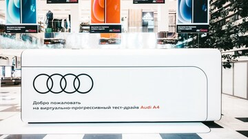

Обновленный Audi A4 раскрывает талант двигаться к цели в прогрессивно-виртуальном пространстве Audi в универмаге «Цветной»

- Абсолютно новый формат тест-драйва: эксклюзивная возможность познакомиться с одной из самых долгожданных новинок Audi в прогрессивном цифровом пространстве и на дорогах общего пользования
- Инновационный павильон Audi в торговом центре «Цветной» в Москве дарит уникальный опыт и дозу мотивации, раскрывая талант каждого двигаться к цели
- Диджитал пространство собирает клуб единомышленников ежедневно с 15 по 28 марта 2021 с 10:00 до 22:00;
Москва, 18 марта 2021 – Audi Россия открывает уникальное виртуальное пространство в универмаге «Цветной», где каждый может лично познакомиться с обновленным Audi A4 и получить дозу мотивации. Обновленный Audi A4 заряжает эмоциями и раскрывает талант каждого двигаться к цели. Испытайте яркие впечатления, став участникам прогрессивного виртуального шоу и начав свой реальный тест-драйв прямо с парковки торгового центра! Инновационный павильон Audi A4 открыт для посещения в универмаге «Цветной» в Москве с 15 по 28 марта 2021.
Инновационный павильон Audi – уникальное пространство, где каждый может познакомиться с обновленным Audi A4 и передовыми технологиями марки с четырьмя кольцами. Реальный и виртуальный тест-драйв обновленного Audi A4 позволит в полной мере испытать всю мощь прогресса и получить уникальный личный опыт. Цифровой павильон символизирует прогрессивный подход марки с четырьмя кольцами к созданию высокоэффективных и технически совершенных автомобилей.
Каждый сможет принять участие в необычном интерактиве «Генератор предсказаний», который поможет раскрыть талант двигаться к цели и следовать за своей мечтой. Карьера или путешествие – что бы вы ни выбрали, прогрессивный Audi A4 станет верным компаньоном на пути к заветной цели.
Обновленный Audi A4 получил еще более эмоциональный и экспрессивный дизайн в стиле современных моделей бренда с четырьмя кольцами. Новая архитектура решетки радиатора Singleframe с сотовой структурой и интегрированными воздухозаборниками придают автомобилю еще более спортивный вид и служат отсылкой к классическим Audi Sport quattro. Интерьер обновленного Audi A4 максимально соответствует динамичному облику модели. В дизайне салона элегантной и спортивной модели преобладают горизонтальные линии. Сенсорный экран мультимедиа MMI диагональю 10,1'' слегка наклонен к водителю и выступает центром управления новой операционной системы. Благодаря использованию сенсорного дисплея с акустической обратной связью и одновременному сокращению числа обычных переключателей и кнопок на центральной консоли формируется совершенно новый опыт управления мультимедиа. Среди основных особенностей системы MMI – исключительно четкое изображение, а также интуитивно понятная и удобная в использовании структура меню.
Для обновленного Audi A4 предлагается три высокопроизводительных бензиновых двигателя с технологией MHEV: 35 TFSI, 40 TFSI и 45 TFSI quattro. Инновационная гибридная технология MHEV гарантирует высокий уровень комфорта, а также позволяет снизить расход топлива. Самая мощная версия Audi A4 оборудована инновационной системой полного привода quattro ultra. Уже в стандартном исполнении обновленный Audi A4 предлагает широкий набор оснащения, которое гарантирует непревзойденный уровень комфорта и безопасности.
Прогрессивно-виртуальный павильон Audi A4 в торговом центре «Цветной» открыт для посещения с 15 по 28 марта 2021 с 10 до 22.
